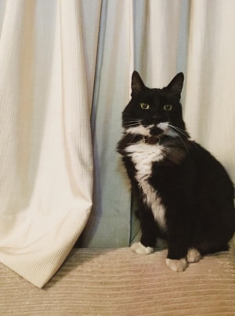
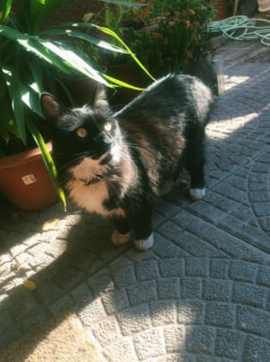

Sandro
Sandro es un tuxedo negro y blanco de 7 años. Tal como comenté anteriormente, este tipo de gatitos se dice que, al tener colores oscuros y neutros, similares a los de la ciudad, hacen que estos gatos se adapten fácilmente a los hogares, resultando ser muy cariñosos y tranquilos, pudiendo ser perfectamente otro miembro más de la familia.
Mi cuñada me lo regaló y desde que lo vi por primera vez, me encantó.

